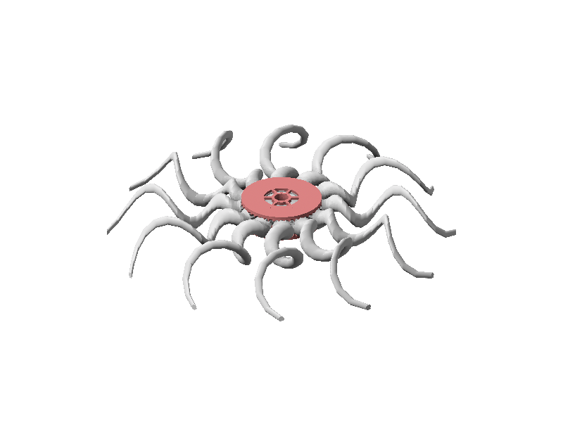

fidget-flower
Drafted with AI, not yet reviewed
A fidget flower: twelve spiral petals, each on a cog wheel that meshes with the cogs round a housing, which turns on a printed bearing.
Ported from src/interactive/flower.scad. It differs in:
- the bearing’s port’s differences (
bearing.rhai); - the petals, a
loftthrough the original’s slices: between two slices the loft turns the round profile, where its polyhedron joins their points straight, a chord that is 3.7% narrower halfway between them; - every round part being round, where RESOLUTION and $fn facet them: the petals, the housing and the gears’ grooves (rotate_extrude with $fn = 12); RESOLUTION still sets how many slices a petal has;
- PART “all” drawing the housing in colour, as the original’s translucent one.
Compared with the original: within 0.26 mm.

Files
Source
// SPDX-License-Identifier: 0BSD // // A fidget flower: twelve spiral petals, each on a cog wheel that meshes // with the cogs round a housing, which turns on a printed bearing. // // Ported from `src/interactive/flower.scad`. It differs in: // - the bearing's port's differences (`bearing.rhai`); // - the petals, a `loft` through the original's slices: between two // slices the loft turns the round profile, where its polyhedron joins // their points straight, a chord that is 3.7% narrower halfway between // them; // - every round part being round, where RESOLUTION and $fn facet them: the // petals, the housing and the gears' grooves (rotate_extrude with // $fn = 12); RESOLUTION still sets how many slices a petal has; // - PART "all" drawing the housing in colour, as the original's // translucent one. // // Compared with the original: within 0.26 mm. import "bearing" as bearing; import "keycap/screws" as screws; import "keycap/inserts" as inserts; // --- Parameters --- // "all", "petal", "housing-top", "housing-bottom", "interface", // "interface-shell", "interface-cage", "interface-top", "interface-bottom" const PART = "all"; const RESOLUTION = 12; const PREVIEW = true; // the bearing's balls, for reference const PETAL_LENGTH = 100.0; const PETAL_THICKNESS = 15.0; const PETAL_END_SCALE = 0.3; const PETAL_END_DISPLACEMENT = 20.0; const PETAL_TURNS = 2; // How the petal's height grows along it, so that the spiral is not even. const PETAL_BEZIER = [0.0, 0.1, 0.4, 1.0]; const HOUSING_THICKNESS = 2.5; const HOUSING_PETAL_COUNT = 12; const HOUSING_PETAL_COGS = 12; // The housing's cogs are as wide as a petal's, and a whole number of them // spans a petal's thickness. const COG_WIDTH = PETAL_THICKNESS * PI / HOUSING_PETAL_COGS; const HOUSING_COGS = (PETAL_THICKNESS / COG_WIDTH).ceiling().to_int() * HOUSING_PETAL_COUNT; const HOUSING_DIAMETER = COG_WIDTH * HOUSING_COGS / PI; const CONNECTION_EXTENT = HOUSING_DIAMETER / 4; const CONNECTION_GROOVE = [2.0, 3.0]; // the rhombus's half diagonals const CONNECTION_R = [PETAL_THICKNESS / 2, PETAL_THICKNESS / 4]; const INTERFACE_JOINER_HEIGHT = 4.0; // --- Petal --- // A circle's slices along a spiral that shrinks as it rises, from the // housing's rim outwards. fn petal() { let n = global::RESOLUTION * 2; let slices = []; for k in 0..n { let f = k.to_float() / (n - 1); let t = global::PETAL_END_DISPLACEMENT * f; let a = global::PETAL_TURNS * 360.0 * f; slices.push(#{ z: global::PETAL_LENGTH * bezier_point(global::PETAL_BEZIER, f), scale: lerp(global::PETAL_THICKNESS, global::PETAL_THICKNESS * global::PETAL_END_SCALE, f) / 2, move: [t * cosd(a), t * sind(a)], }); } slices[0].shape = circle(1); loft(slices) } // The cog wheel at a petal's root, tapering into the housing, with the // groove that rides on the housing's ridge. fn gear() { let r = global::CONNECTION_R; let e = global::CONNECTION_EXTENT; // Triangles turned by a cog each, three cogs a triangle: a star whose // inner corners are where neighbouring triangles' sides cross. let n = global::HOUSING_PETAL_COGS; let cogs = star(n, [r[0], r[0] / 2.0 / cosd(60.0 - 180.0 / n)]); let groove = _rhombus(global::CONNECTION_GROOVE) .rotate_z(atand(e / (r[1] - r[0]))) .move([(r[0] + r[1]) / 2, e / 2]) .revolve(); loft([#{z: 0, shape: cogs}, #{z: e, scale: r[1] / r[0]}]) .difference(groove) .rotate_x(180) } // OpenSCAD's circle(1, $fn = 4) scaled by `half`: a rhombus with its // corners on the axes. fn _rhombus(half) { polygon([[half[0], 0], [0, half[1]], [-half[0], 0], [0, -half[1]]]) } // --- Housing --- // The housing's ring, in the plane through the axis, with the ridge the // gears' grooves ride on, and its cogs: pyramids from the centre out to its // rim, beyond its middle. fn housing() { let d = global::HOUSING_DIAMETER; let t = global::PETAL_THICKNESS; let ht = global::HOUSING_THICKNESS; let r = global::CONNECTION_R; let profile = polygon([ [d * 7 / 32, t / 2], [d * 7 / 32, t / 2 + ht], [d / 2, t / 2 + ht], [d / 2, t / 2], [d / 4, t / 4], [d / 4, t / 2], ]); let ridge = _rhombus(global::CONNECTION_GROOVE) .rotate_z(atand((r[0] - r[1]) / global::CONNECTION_EXTENT)) .move([d * 3 / 8, t * 3 / 8]); let angle = atand(d / t); let length = d / 2 / sind(angle); let cog = cone([global::COG_WIDTH / 2, 0], [0, length], #{sides: 3}) .move([0, 0, -length]) .rotate_xyz([180, angle, 0]) .difference(cylinder(d / 4, t)); let cogs = cog.repeat_polar(global::HOUSING_COGS).rotate_z(360.0 / global::HOUSING_COGS / 2); union(cogs, union(profile, ridge).revolve()) } // The top half holds the bearing's inner shell by its middle, on a hub with // six spokes. fn housing_top() { let d = global::HOUSING_DIAMETER; let t = global::PETAL_THICKNESS; let ht = global::HOUSING_THICKNESS; let h = t / 2 + ht - global::INTERFACE_JOINER_HEIGHT; let w = ht - t / 32; let spokes = cuboid([w, w, d / 4]) .move([0, t / 2 - ht, d / 12 + d / 8]) .rotate_x(90) .polar_array(6); let hub = union(cylinder(d / 8, [0, h]), spokes).difference(cylinder(d / 12, [-1, h + 1])); union( housing().difference(cylinder(d * 9 / 32, t * 33 / 32)), hub.move([0, 0, global::INTERFACE_JOINER_HEIGHT]), ) } fn housing_bottom() { housing().reflect_z() } // --- Interface --- // Her bearing between the housing and the hub: an M2 screw 6 long from the // top, its head 2 below the face, into a CNC Kitchen M2 insert 3 deep from // the bottom, the screw's hole on through. let interface = bearing::bearing(#{ shell_height: PETAL_THICKNESS, shell_outer_diameter: HOUSING_DIAMETER / 2, shell_inner_diameter: HOUSING_DIAMETER / 4, shell_inner_joiner_count: 3, shell_inner_joiner_height: INTERFACE_JOINER_HEIGHT, shell_inner_gap: 0, ball_diameter: 3.5, ball_count: 12, ball_margin: 0.2, cage_margin: 0.5, cutters: [ screws::hole(2, 6, #{counterbore: 4}).move([0, 0, -2]), union(inserts::hole("M2", #{depth: 3}), screws::hole(2, 20)), ], }); // --- Output --- fn draw_interface(b, which) { let all = which == "interface"; if all || which == "interface-shell" { draw(b.outer); } if all || which == "interface-top" { draw(b.inner_top); } if all || which == "interface-bottom" { draw(b.inner_bottom); } if all || which == "interface-cage" { draw(b.cage); } if all { draw(b.cage.reflect_z()); } if global::PREVIEW { draw_rgb(b.balls, 0.5, 0.5, 0.5); } } if PART == "all" { draw_rgb(union(housing_top(), housing_bottom()), 1.0, 0.6, 0.6); draw_interface(interface, "interface"); // The petals swirl out of their wedges of the circle, so they are copies // rather than a fold. let one = union(petal(), gear()).rotate_y(90).move([HOUSING_DIAMETER / 2, 0, 0]); draw(one.polar_array(HOUSING_PETAL_COUNT)); } else if PART == "petal" { draw(union(petal(), gear())); } else if PART == "housing-top" { draw(housing_top()); } else if PART == "housing-bottom" { draw(housing_bottom()); } else if PART.starts_with("interface") { draw_interface(interface, PART); } else { throw `PART must be all, petal, housing-top, housing-bottom or interface[-shell, -cage, -top, -bottom], got ${PART}`; }